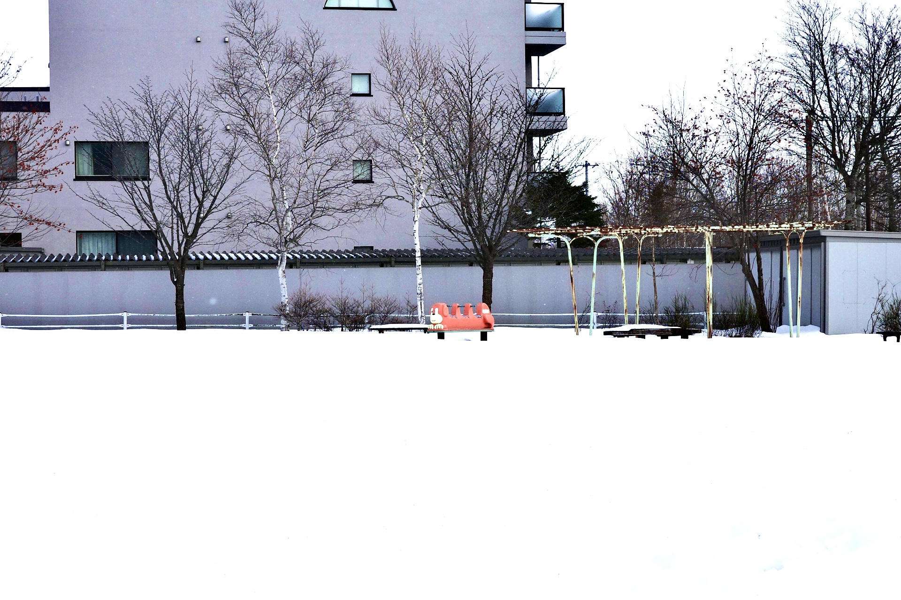

藤本拓 公式サイト
最終更新：2026年2月20日
プロフィール
|  | 名前：藤本拓 好きなこと：書く、寝る、せめて誠実であろうとすること、チャットモンチー、Oasis 嫌いなこと：忖度、運動もろもろ、嘘つき、四則演算、セロリ、緑色 |
最新のお知らせ
・2026/??/??：本を出します。頑張ります。
・2026/03/29：「Indie Books Holiday in salon」（自費出版スーパーイベント）に出ます。
・2026/02/22：「祝日自由市」（「本当の」フリーマーケット）に出ます。
・2026/02/20：公式サイトを開設しました。
LIVE: PANDA OBSERVATION